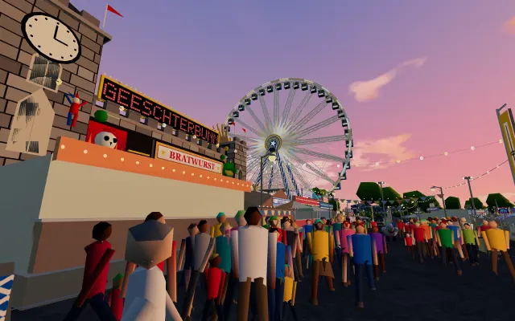
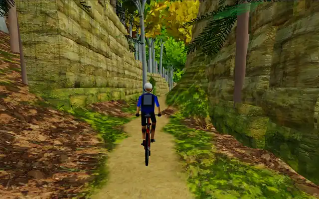
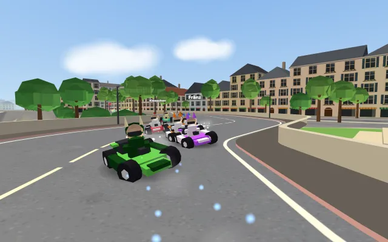
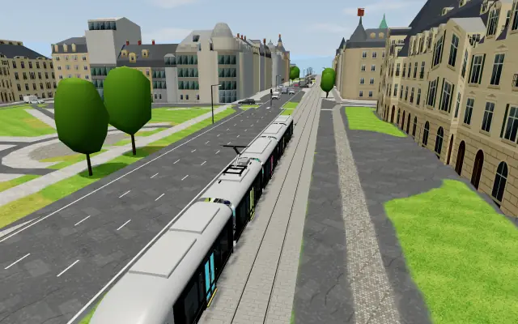

ian.lu
Wieder, Schoul-Tools, Noriichten a Projeten op enger Plaz.
Ënnerwee
Bus & Zuch
Schueberfouer
MTB Mëllerdall
Kart Lëtzebuerg
TramsimulatorMoien, ech sinn den Ian Mulheims.
E Schüler aus Lëtzebuerg, deen Apps, Schoul-Tools a kleng Web-Projeten baut — am Browser, um iPhone an op der Apple Watch.
Méi liesen
Op ian.lu leeën ech dat of, wat ech bauen. Ech sinn zu Lëtzebuerg am Lycée, a bal alles hei huet als Fro ugefaang — kann ech e Ronnenzäit-Timer fir de Kart maachen, kann ech all markéierte Wanderwee vum Land op eng Kaart bréngen, kann ech e Chat schreiwen, deen direkt reagéiert. D'Äntwerte ginn um Enn vu menge Frënn, menger Klass a menger Famill benotzt — dofir stinn se hei an net an engem Dossier op mengem Laptop.
Wat ouni Kont geet
De gréissten Deel vun der Säit ass op. Du kanns all Arcade-Spiller direkt am Browser spillen, ouni eppes z'installéieren, live Bus- an Zuchofaarten am ganze Land nokucken, d'Wieder kucken, mat SkyLens d'Fligeren iwwer dir verfollegen an all Wander- a Mountainbike-Tour vum Land duerchkucken. Nëmme wat perséinlech ass — Noriichten, Frënn, Noten, däi Stonneplang — brauch e gratis Kont, an dat ass mat „Kont“ markéiert.
Wanderen a Vëlofueren zu Lëtzebuerg
Am meeschten Aarbecht stécht am Weeër-Verzeechnes. Lëtzebuerg huet ronn 105 ausgeschilderte Rondweeër, d'Auto-Pédestres, dobäi e Netz vu markéierte Mountainbike-Ronnen — an d'Informatioune doriwwer si verspreet an dacks ëmständlech. All Tour hei huet seng Längt, d'Gang- oder Fuerzäit, d'Héichtemeter an de Profil, eng richteg Kaart mam tatsächleche Wee an — well den ëffentlechen Transport zu Lëtzebuerg gratis ass — déi nooste Busarrêten an d'Linnen, déi do halen. Du kanns se och all op eemol op der Weeërkaart kucken, oder de Geoportal opmaachen, deen d'Touren op déi offiziell topografesch Kaarten, Loftbiller bis zréck op 1967 an d'LiDAR-Terrainmodell leet.
Wéi et gebaut ass
Alles ass mat der Hand geschriwwen — normale JavaScript am Browser, Supabase fir Konten, Live-Chat a Späicher, a Python fir d'Pipelines, déi d'Weeërsäiten aus OpenStreetMap-Donnéeë generéieren. Do stécht kee Site-Builder a kee Modell hannendrun. Wann eppes hei futti oder falsch ass, ass et menges fir ze flécken — a du kanns mer et soen.